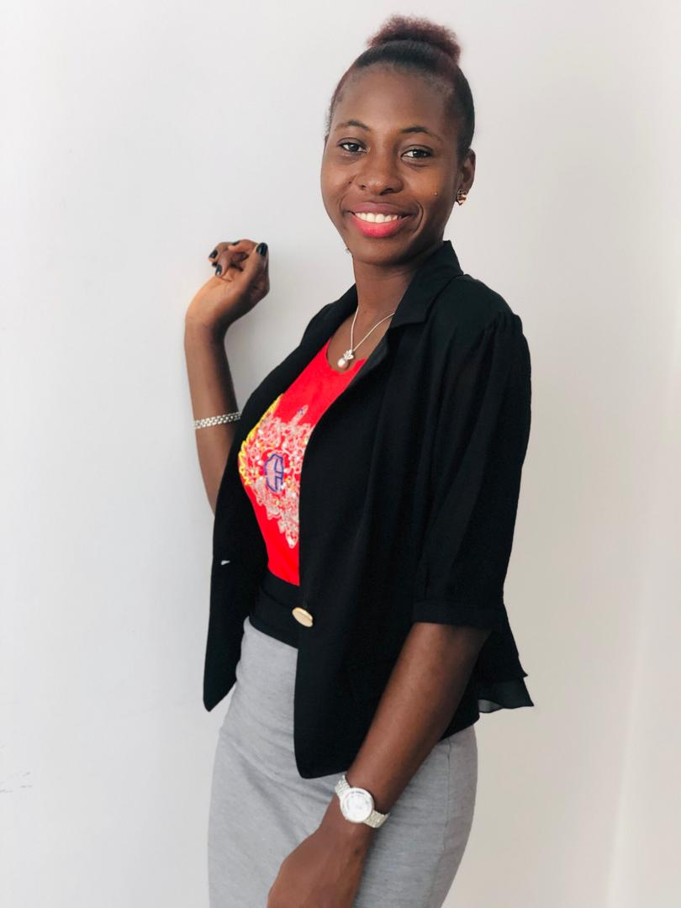

HARI--LYN

SUMMARY
Dynamic and results-driven professional with over four years of experience in programme
immplemntation, management, and communication within the rural development sector. Proven ability to
engage stakeholders, and implement comprehensive communication strategies to enhance
organizational visibility and impact. I have a high personal & career goal and able to use initiative to
develop effective solutions to community development programmes.
WORK EXPERIENCE
Programme Assistant, The Energy Nexus Network(TENN) Jul 2023 - Present
- Coordinated] multiple projects focused on renewable energy access and sustainable
development in rural communities.
- Collaborate with local and international partners to design and implement programs, ensuring
alignment with organizational goals and objectives.
- Monitor and report on project progress, ensuring timely completion of deliverables.
Project Manager,JaSiLe Foundation Jan 2022 - Jun 2023
- Developed project plans, monitored progress, coordinated with cross-functional teams, and
conducted status meetings.
- Built and maintained stakeholder relationships, communicated objectives and progress, and
managed expectations.
- Identified risks, created mitigation strategies and contingency plans, and managed risk
documentation.
- Developed budgets, tracked expenses, optimized costs, managed vendor contracts, and
provided financial reports.
Project Officer,JaSiLe Foundation Jun 2019 - Dec 2021
- Supported the project team by coordinating meetings and activities, facilitating effective
communication and collaboration, and managing project logistics and resources.
- Maintained project documentation, generated progress reports, tracked expenses, and
documented lessons learned and best practices.
- Assisted in developing and implementing project plans and collaborated with team members and
stakeholders to achieve project goals and objectives.
EDUCATION
Bachelor of Arts in Education (French/Linguistics) Oct 2014 - Jun 2018
Njala University
CERTIFICATIONS
Software Development Apr 2024
Women Techsters an initiative of Tech4Dev
Administrative Professional Oct 2020
LinkedIn Learniing
Communications Foundation Oct 2020
LinkedIn Learniing
SKILLS
- Proven communication and interpersonal skills
- Strong administrative and organizational abilities
- Advanced proficiency in MS Office products
- Experience with web content management systems
- Ability to work independently with minimal supervision
- Strong teamwork and collaboration skills
- Proficiency in English (both written and oral)
ADDITIONAL INFORMATION
Back to top